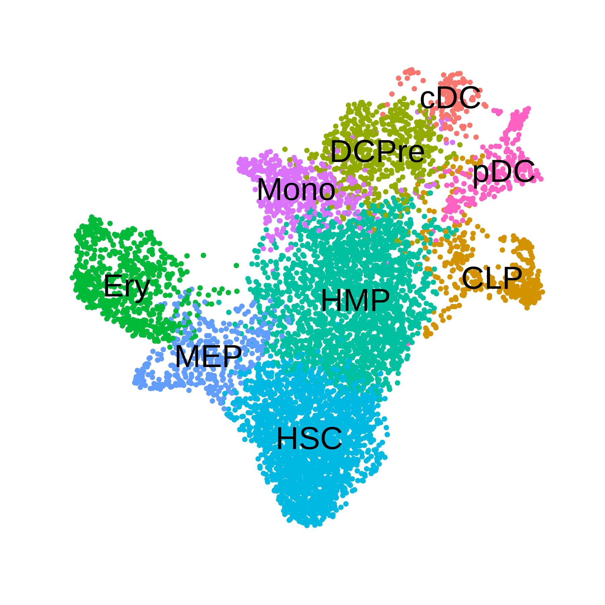
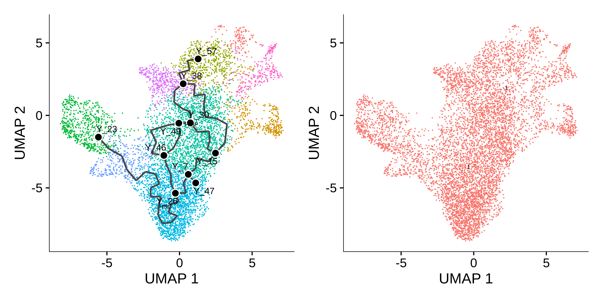
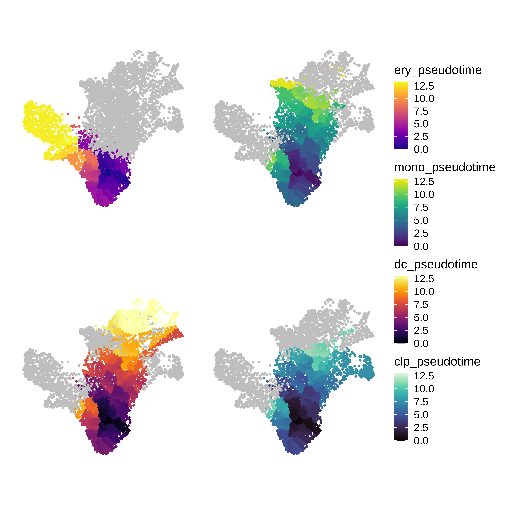
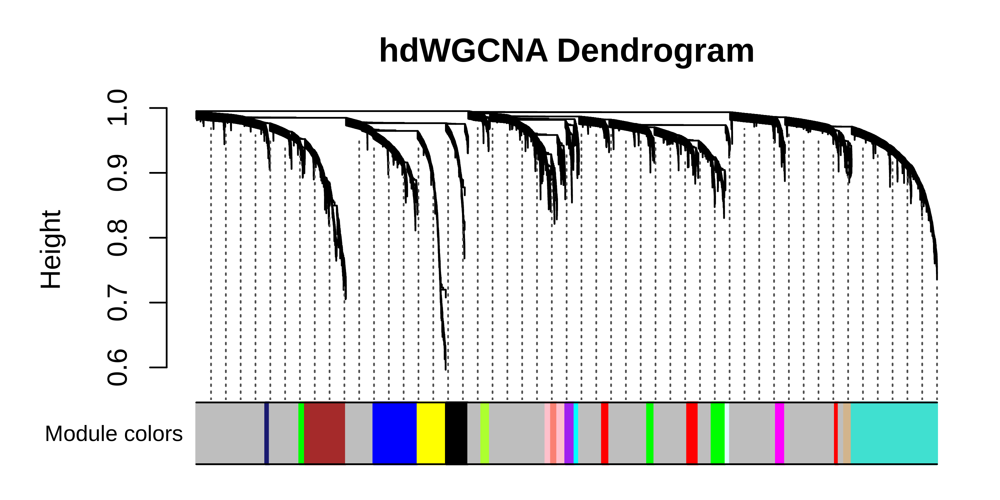
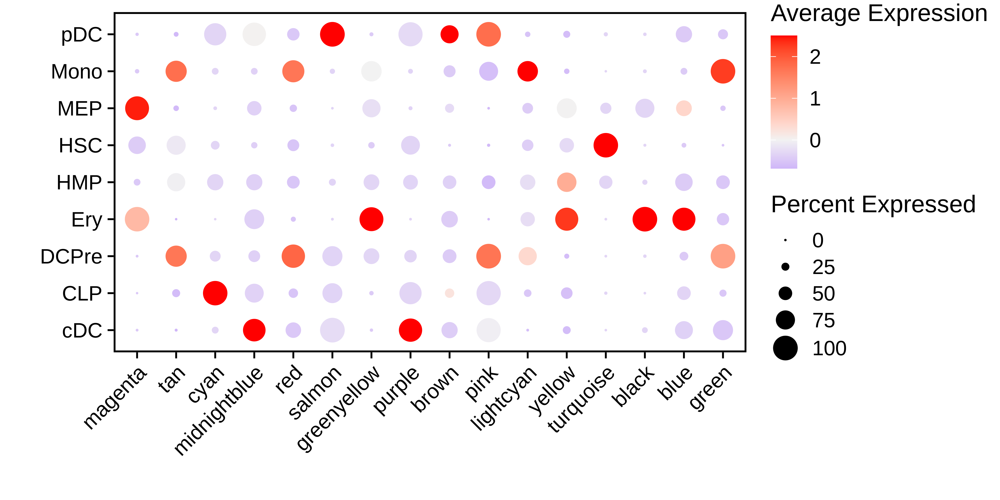
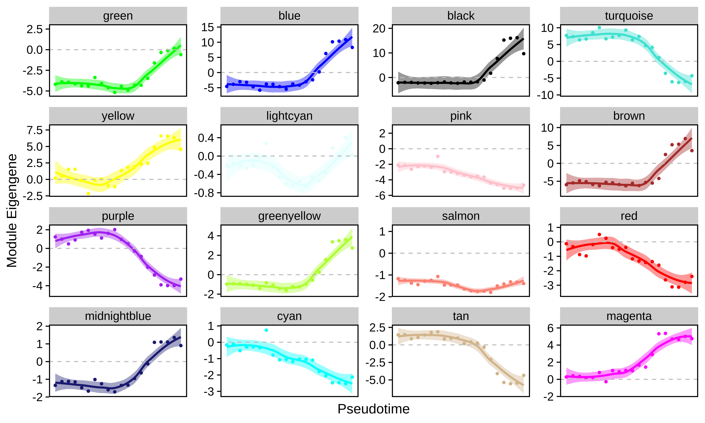
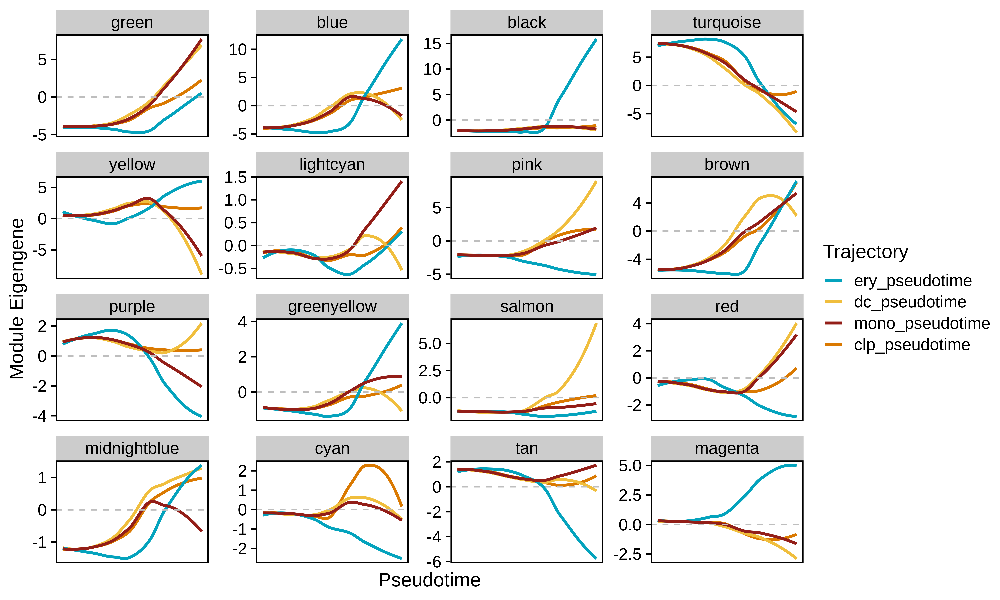

pseudotime.RmdThis tutorial covers co-expression network analysis in a dataset with pseudotime information. We will use a dataset of human hematopietic stem cells to identify co-expression modules, perform pseudotime trajectory analysis with Monocle3, and study module dynamics throughout the cellular transitions from stem cells to mature cell types. Refer to the Monocle3 documentation for a more thorough explanation of pseudotime analysis, and see the hdWGCNA single-cell tutorial for an explanation of the co-expression network analysis steps.
First, download the .rds file from this Google Drive link containing the processed hematopoetic stem cell scRNA-seq Seurat object.
Next, load the dataset into R and the necessary packages for hdWGCNA and Monocle3.
# single-cell analysis package
library(Seurat)
# plotting and data science packages
library(tidyverse)
library(cowplot)
library(patchwork)
# co-expression network analysis packages:
library(WGCNA)
library(hdWGCNA)
# using the cowplot theme for ggplot
theme_set(theme_cowplot())
# set random seed for reproducibility
set.seed(12345)
# optionally enable multithreading
enableWGCNAThreads(nThreads = 8)
# load the dataset
seurat_obj <- readRDS('hematopoetic_stem.rds')
# plot the UMAP colored by cluster
p <- DimPlot(seurat_obj, group.by='celltype', label=TRUE) +
umap_theme() + coord_equal() + NoLegend() + theme(plot.title=element_blank())
p
In this section, we use Monocle3 to perform pseudotime trajectory analysis in this dataset. Follow these instructions to install Monocle3.
library(monocle3)
library(SeuratWrappers)
# convert the seurat object to CDS
cds <- as.cell_data_set(seurat_obj)
# run the monocle clustering
cds <- cluster_cells(cds, reduction_method='UMAP')
# learn graph for pseudotime
cds <- learn_graph(cds)
# plot the pseudotime graph:
p1 <- plot_cells(
cds = cds,
color_cells_by = "celltype",
show_trajectory_graph = TRUE,
label_principal_points = TRUE
)
# plot the UMAP partitions from the clustering algorithm
p2 <- plot_cells(
cds = cds,
color_cells_by = "partition",
show_trajectory_graph = FALSE
)
png(paste0(fig_dir, 'umap_monocle.png'), width=8, height=4, res=500, units='in')
p1 + p2
dev.off()
The Monocle3 learn_graph function builds a principal graph in a dimensionally reduced space of the dataset. Here we can see the principal graph overlaid on the UMAP. The principal graph will serve as the basis of the pseudotime trajectories. Next, we have to select the starting node, or principal node, of the graph as the origin of the pseudotime. We select node Y_26 as the prinicipal node since that overlaps with the stem cell population.
# get principal node & order cells
principal_node <- 'Y_26'
cds <- order_cells(cds,root_pr_nodes = principal_node)
# add pseudotime to seurat object:
seurat_obj$pseudotime <- pseudotime(cds)
# separate pseudotime trajectories by the different mature cells
seurat_obj$ery_pseudotime <- ifelse(seurat_obj$celltype %in% c("HSC", "MEP", 'Ery'), seurat_obj$pseudotime, NA)
seurat_obj$mono_pseudotime <- ifelse(seurat_obj$celltype %in% c("HSC", "HMP", 'Mono'), seurat_obj$pseudotime, NA)
seurat_obj$dc_pseudotime <- ifelse(seurat_obj$celltype %in% c("HSC", "HMP", 'DCPre', 'cDC', 'pDC'), seurat_obj$pseudotime, NA)
seurat_obj$clp_pseudotime <- ifelse(seurat_obj$celltype %in% c("HSC", "HMP", 'CLP'), seurat_obj$pseudotime, NA)
seurat_obj$UMAP1 <- seurat_obj@reductions$umap@cell.embeddings[,1]
seurat_obj$UMAP2 <- seurat_obj@reductions$umap@cell.embeddings[,2]
p1 <- seurat_obj@meta.data %>%
ggplot(aes(x=UMAP1, y=UMAP2, color=ery_pseudotime)) +
ggrastr::rasterise(geom_point(size=1), dpi=500, scale=0.75) +
coord_equal() +
scale_color_gradientn(colors=plasma(256), na.value='grey') +
umap_theme()
p2 <- seurat_obj@meta.data %>%
ggplot(aes(x=UMAP1, y=UMAP2, color=mono_pseudotime)) +
ggrastr::rasterise(geom_point(size=1), dpi=500, scale=0.75) +
coord_equal() +
scale_color_gradientn(colors=viridis(256), na.value='grey') +
umap_theme()
p3 <- seurat_obj@meta.data %>%
ggplot(aes(x=UMAP1, y=UMAP2, color=dc_pseudotime)) +
ggrastr::rasterise(geom_point(size=1), dpi=500, scale=0.75) +
coord_equal() +
scale_color_gradientn(colors=inferno(256), na.value='grey') +
umap_theme()
p4 <- seurat_obj@meta.data %>%
ggplot(aes(x=UMAP1, y=UMAP2, color=clp_pseudotime)) +
ggrastr::rasterise(geom_point(size=1), dpi=500, scale=0.75) +
coord_equal() +
scale_color_gradientn(colors=mako(256), na.value='grey') +
umap_theme()
# assemble with patchwork
(p1 | p2) / (p3 + p4) + plot_layout(ncol=1, guides='collect')
In this section, we perform the essential steps of co-expression network analysis on this dataset. See this tutorial for a more detailed explaination of these steps.
# set up the WGCNA experiment in the Seurat object
seurat_obj <- SetupForWGCNA(
seurat_obj,
gene_select = "fraction",
fraction = 0.05,
wgcna_name = 'trajectory'
)
# construct metacells
seurat_obj <- MetacellsByGroups(
seurat_obj = seurat_obj,
group.by = "all_cells",
k = 50,
target_metacells=250,
ident.group = 'all_cells',
min_cells=0,
max_shared=5,
)
seurat_obj <- NormalizeMetacells(seurat_obj)
# setup expression matrix
seurat_obj <- SetDatExpr(
seurat_obj,
group.by='all_cells',
group_name = 'all'
)
# test soft power parameter
seurat_obj <- TestSoftPowers(seurat_obj)
# construct the co-expression network
seurat_obj <- ConstructNetwork(
seurat_obj,
tom_name='trajectory',
overwrite_tom=TRUE
)
# compute module eigengenes & connectivity
seurat_obj <- ModuleEigengenes(seurat_obj)
seurat_obj <- ModuleConnectivity(seurat_obj)
# plot dendro
PlotDendrogram(seurat_obj, main='hdWGCNA Dendrogram')

#######################################################################
# DotPlot of MEs by clusters
#######################################################################
MEs <- GetMEs(seurat_obj)
modules <- GetModules(seurat_obj)
mods <- levels(modules$module)
mods <- mods[mods!='grey']
meta <- seurat_obj@meta.data
seurat_obj@meta.data <- cbind(meta, MEs)
# make dotplot
p <- DotPlot(
seurat_obj,
group.by='celltype',
features = rev(mods)
) + RotatedAxis() +
scale_color_gradient2(high='red', mid='grey95', low='blue') + xlab('') + ylab('') +
theme(
plot.title = element_text(hjust = 0.5),
axis.line.x = element_blank(),
axis.line.y = element_blank(),
panel.border = element_rect(colour = "black", fill=NA, size=1)
)
png(paste0(fig_dir, 'dotplot_MEs.png'), width=8, height=4, res=500, unit='in')
p
dev.off()
seurat_obj@meta.data <- metaIn this section we use the hdWGCNA function PlotModuleTrajectory to visualize how the module eigengenes change throughout the pseudotime trajectories for each co-expression module. This function requires you to specify the name of the column in the Seurat object’s meta data where the pseudotime information is stored. Since we split our pseudotime into four different trajectories, first we will plot the ME trajectory dynamics for the erythrocytes.
Importantly, we note that module dynamics can be studied using different pseudotime inference approaches, we simply chose to run Monocle3 as an example.
p <- PlotModuleTrajectory(
seurat_obj,
pseudotime_col = 'ery_pseudotime'
)
p
Based on these dynamics, we can see which co-expression modules are turning their expression programs on or off throughout the transition from stem cells to mature erythrocytes.
We can also compare module dynamics for multiple trajectories simultaneously by passing more than one pseudotime_col parameters to PlotModuleTrajectory.
# loading this package for color schemes, purely optional
library(MetBrewer)
p <- PlotModuleTrajectory(
seurat_obj,
pseudotime_col = c('ery_pseudotime', 'dc_pseudotime', 'mono_pseudotime', 'clp_pseudotime'),
group_colors = paste0(met.brewer("Lakota", n=4, type='discrete'))
)
p